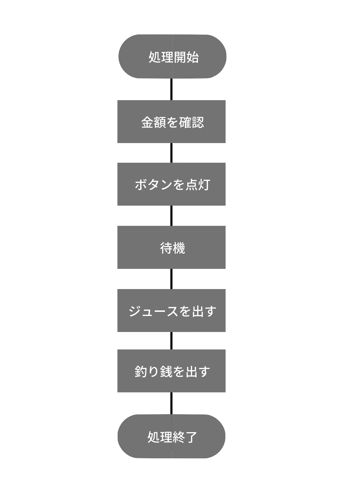

JavaScriptの関数を作成しよう
事前に【JS】オブジェクトと関数、変数スコープを予習してください。
処理を分ける
関数には最低で一つの処理があります。
また、一つの関数に複数の処理を含めてしまうと、汎用性や拡張性、保守性が悪くなるなどのデメリットがあります。
例えば、自動販売機でジュースを買うときの機能を考えてみましょう。
人間側の処理
- お金を自動販売機にいれる
- ジュースを選ぶ
- ジュースを取る
- 釣り銭を取る
自動販売機側の処理
- 金額を確認
- 販売可能なジュースのボタンを点灯
- ジュースを出す
- 釣り銭を出す
自動販売機のフローチャート
処理を取り出す
この自動販売機の処理には最低４つの処理があります。（今回「待機」は含めません）
処理を関数にする
最初に、現在提供中のジュース情報であるジュース配列を次のように定義しておきます。
const juices = [
{
name: 'コーラ',
fee: 120,
stock: 2,
available: false
},
{
name: 'サイダー',
fee: 120,
stock: 5,
available: false
},
{
name: 'おいしい水',
fee: 100,
stock: 1,
available: false
},
{
name: 'コーヒー',
fee: 120,
stock: 0,
available: false
},
{
name: '大きいコーラ',
fee: 150,
stock: 2,
available: false
}
];
nameはジュースの名前、feeは値段、stockは在庫数、availableは販売可能かどうかを意味します。
「金額を確認」関数
金額は関数の引数で受け取るようにします。
100円を挿れて、10円を挿れてと現実では繰り返しますが、今回はまとめた金額を受け取れると仮定します。
人間側の処理
お金を自動販売機にいれる処理を記述します。
const putMoney = 150; // 100円
console.log(`${putMoney}円が入りました。`);
自動販売機側の処理
引数の金額・在庫数に応じてjouices配列のavailableを更新する関数updateJuicesAvailableを作成してください。
availableは在庫が1つ以上あり、かつ金額が足りている場合にtrueとなります。
updateJuicesAvailable(putMoney);
「販売可能なジュースを点灯」する関数
人間側の処理
なし
自動販売機側の処理
販売可能なジュースをすべてコンソールに表示する関数viewJuicesAvailableを作成してください。
コンソール出力例：⭕ コーラ ¥120
viewJuicesAvailable();
ジュースを選ぶ
人間側の処理
「おいしい水」を選んだと仮定します。
const chooce = 'おいしい水';
自動販売機側の処理
なし
ジュースを出す
人間側の処理
なし
自動販売機側の処理
人間が選択したジュース名chooseと一致するジュースを外に出す関数putOutJuiceを作成してください。
外に出す際は在庫数を-1し、出したジュースをコンソールに出力します。
コンソール出力例：ガコンガコン（おいしい水を出した）
putOutJuice(chooce);
釣り銭を出す
人間側の処理
なし
自動販売機側の処理
お釣りを計算し、お釣りがある場合は返金する関数returnChangeを作成してください。
人間が購入したジュース名、および人間がいれた金額を引数にします。
お釣りがある場合はコンーソルに出力してください。
コンソール出力例：チャリンチャリン（お釣り¥50を出した）
returnChange(chooce, putMoney);